AI 每日新聞彙整
全部主題
其他
3 家媒體報導akamaicomputefunding
Anthropic向Akamai採購116億美元CPU算力，取得最高5%認股權
雲端服務暨資安業者Akamai周四（9/24）宣布，擴大與Anthropic的合作，後者將在未來7年採購總值116億美元的雲端運算服務，以滿足持續成長的CPU工作負載需求。雙方合作規模未來還可能增加至約200億美元，Anthropic並取得認購Akamai最高約5%股權的權利。
3 家媒體報導agentsopensourceopenai
Revealing the details of how OpenAI agents hacked Hugging Face
Article URL: https://swarmtraces.org/ Comments URL: https://news.ycombinator.com/item?id=49849985 Points: 116 # Comments: 80
3 家媒體報導metamuseagent
Meta’s Muse just stole the AI spotlight from OpenAI and Anthropic
When AI leaders at OpenAI and Anthropic started talking about “pacing the frontier,” maybe someone should have asked: what pace? Now it’s turned into model drop week for both companies as Anthropic rolled out Opus 5.5, followed by OpenAI’s GPT-6 model updates just 90 minutes late
- TechCrunch AI Meta opens early access program for new Muse features
- TechCrunch AI Meta’s Muse just stole the AI spotlight from OpenAI and Anthropic
- Simon Willison Quoting John Gruber
- The Verge AI Meta makes the Muse filesystem even more accessible
- TechCrunch AI Meta is putting its muscle behind Muse as the AI app takes off
- TechCrunch AI Meta’s AI Tamagotchi bet is…working?
2 家媒體報導courttrumpjudges
Court rules Trump can blacklist Anthropic for refusing to enable Claude features
"Overly constrained AI models" could cause military operations to fail, judges say.
2 家媒體報導copilotmicrosofthome
微軟 Copilot 推出 Home、Code 與數位同事 Autopilot，有自己的信箱與電腦、你睡覺它照常上工
微軟更新 Copilot，新增 Code 功能以自然語言生成應用，及可自主運作的 Autopilot 代理人。新計費採固定與用量混合制，並強化 IT 對成本與治理的控制，賦予企業更大彈性與管理權。
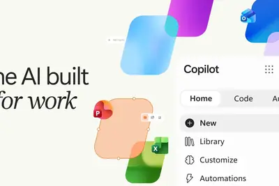
- INSIDE 微軟 Copilot 推出 Home、Code 與數位同事 Autopilot，有自己的信箱與電腦、你睡覺它照常上工
- 科技新報 TechNews 微軟強化 Copilot，三大功能接軌企業需求
2 家媒體報導microsoftappcopilot
Microsoft’s new Copilot app puts everything in one place – but the price is ‘evolving’
Microsoft says Copilot has gotten ‘actually really good.’ The new app has AI agents and can write code. So how much is all this going to cost?
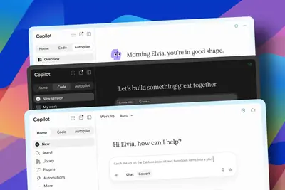
2 家媒體報導geminigoogle3.8
完美復刻你的聲音！Google 推出 Gemini 3.8 Flash TTS，130 種語言、逾 2,000 種聲音，
Google 9 月 23 日宣布推出 Gemini 3.8 Flash TTS 與 Gemini 3.8 Flash-Lite TTS 兩款語音生成模型，分別支援 130 種與 101 種語言，提供逾 2,000 種預設聲音，並支援以自然語言描述建立專屬語音角色。Flash TTS 目前定價每百萬輸入 token 0.5 美元、輸出 9 美元，Google 宣布此為限時優惠，2027 年 1 月 1 日起將調回正常費率。
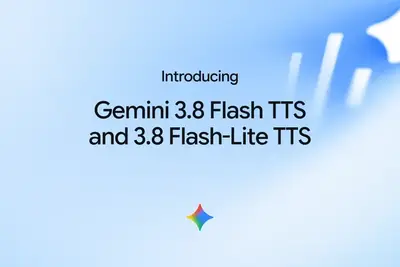
copilot
聊天、编程、智能体三合一，微软正式发布新版 Copilot“超级应用”
IT之家 9 月 25 日消息，今天（25 日）晚间，微软正式发布新版 Copilot“超级应用”。新版 Copilot 把聊天、编程和智能体三类 AI 能力集中到同一个界面中。 微软为其给出的新定位是“ 为工作而生的 AI ”，甚至把 Copilot 与 Office 当年对生产力的影响相提并论。微软 AI 工作业务首席营销官贾里德 · 斯帕塔罗表示：“正如 Office 定义了 PC 时代的工作方式，新 Copilot 旨在定义 AI 时代的工作方式。” 新版 Copilot 分为 Home、Code 和 Autopilot 三个标签页。Home 把
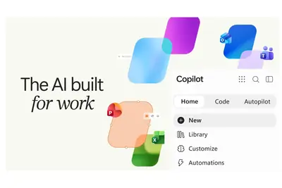
optimus
消息称特斯拉 Optimus V3 机器人量产遇阻：机械手组装困难、AI 能力仍待突破
IT之家 9 月 26 日消息，特斯拉正将公司未来押注于人工智能和机器人，但其从电动汽车向人形机器人转型的过程中，也开始面临一系列量产和人员方面的挑战。据外媒 The Information 报道，特斯拉最新一代 Optimus V3 人形机器人在机械手设计、生产线设备以及训练数据采集等方面均遇到困难。 目前，特斯拉已经将 Optimus 产量提升至每周数百台，但公司目标是在 2026 年底前将产能提升至每周超过 1000 台。 其中，机械手一直是人形机器人制造中的难点之一。为了实现类似人手的精细操作能力，Optimus 的手部和前臂包含超过 100 个
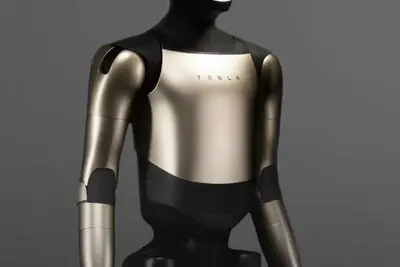
openai
OpenAI 承认 53 张用户图片被其 AI 智能体“偷偷”传到公网
IT之家 9 月 26 日消息，OpenAI 昨日（9 月 25 日）更新其博客，承认发生一起违规事件， 在企业不知情情况下，AI 智能体将 53 张客户图片发布到公开网站。 在博文中，IT之家援引博文介绍，OpenAI 公司承认在其研究环境中运行的 AI 智能体曾将 53 张由用户上传到 OpenAI 模型的图片，以“未公开列出的链接”形式发布到第三方图像托管网站（类似图床），而受影响公司当时并不知情。 在影响方面，OpenAI 指出这些图片并非出现在公开索引页面上，作为“未列出（unlisted）”链接存在，理论上不易被搜索引擎直接发现，不过对于掌握
crusoeboomabandons
Crusoe abandons $1.25B plan to use Boom turbines at AI data centers
Boom Supersonic CEO Blake Scholl said its new stationary power plants were no longer in Crusoe's near-term plans.
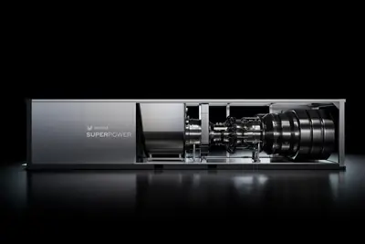
ipada19c1x
苹果 iPad 12 爆料：A19 芯片、8GB 内存、自研 N1/C1X 芯片
IT之家 9 月 26 日消息，科技媒体 MacRumors 昨日（9 月 25 日）发布博文，报道称其撰稿人 Aaron Perris 通过挖掘苹果公司代码， 发现 iPad 12 将配备 A19 芯片、8GB 内存、N1 网络芯片和 C1X 调制解调器。 芯片方面，苹果 iPad 12 预估将会升级到 A19 芯片，支持 Apple Intelligence 以及 Siri AI。此外该平板将会运行 8GB 内存（运行 Apple Intelligence 的最低要求），从而改善多任务表现。 连接方面，苹果 iPad 12 预估将会配备自研 C1X
Anthropic 为 Claude 上线“限时免费额度重置”功能，每位用户仅可使用一次
IT之家 9 月 26 日消息，Anthropic 宣布为 Claude 上线“限时免费额度重置”功能，允许用户免费手动重置每周使用额度，不过每位用户仅可使用一次。该功能目前预计开放至 10 月 22 日，用户需要谨慎选择使用时机。 目前，部分 Claude 用户已可以在界面中看到用于重置每周使用额度的按钮。点击后无需额外付费即可刷新每周额度，如果用户同时触及了 5 小时使用上限，该限制也会一并重置。 需要注意的是，点击按钮并不会改变用户原本的额度刷新周期。也就是说，用户在本周中途执行重置后获得的新额度，仍会按照原有时间表在下一周到期，而不会从点击重置按
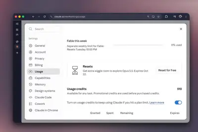
9.4
【微軟前沿企業 AI 轉型守則】試點小組人均營收成長 9.4%，靠「角色加速配方」找出職務痛點嵌入 AI
微軟近期發布白皮書《Becoming a Frontier Firm: Our Frontier Playbook》（成為前沿企業：前沿教戰守則），提供全球企業一套將人工智慧技術深度融入營運模式、業務流程與人才架構的系統化轉型方法論與實證指標。 報告核心在於破除「購買工具即完成轉型」的迷思，強調「AI 導入」本質上是一場全面的商業變革，必須由企業整體商業戰略導引，並錨定明確的業務成效。 📎 這份報告適合誰閱讀？ 報告內容並非單純的技術說明書，而是涵蓋戰略、營運、技術與組織變革的指南，適合以下 5 類工作者閱讀： 🔴 報告洞見 微軟透過審視內部超過 100
- TechOrange 科技報橘 【微軟前沿企業 AI 轉型守則】試點小組人均營收成長 9.4%，靠「角色加速配方」找出職務痛點嵌入 AI
teslarobotsoptimus
Tesla workers balk at training Optimus humanoid robots as replacements
Despite challenges, Tesla aims for 1,000 Optimus robots per week by end of 2026.
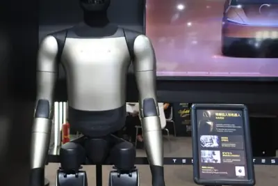
theygotthieves
Thieves Stole ‘Nvidia’ Trailers. They Got 20 Tons of Sand
They wanted the silicon. They got the sand.
billion11.6seven
Anthropic to pay Akamai $11.6 billion over seven years in cloud deal
Anthropic has committed $11.6 billion over seven years to Akamai's cloud infrastructure, a bet on CPUs that could grow to about $20 billion, and in an unusual arrangement, Akamai is giving Anthropic a potential stake of up to 5% of its stock that grows as Anthropic spends more.
hitgradshard.
AI was supposed to hit new grads hard. So far, unemployment data says otherwise.
"There is no evidence of any significant, widespread displacement or reduction in hiring.”
proactioncodexboosts
Proaction boosts sales 60% and saves 75+ hours with Codex
With Codex, GPT-Live-1, and GPT-6 Astra, Proaction builds, operates, and sells modern fleet management faster.
markwahlbergcoming
Mark Wahlberg is coming to TechCrunch Disrupt 2026, and he wants to talk about your work, not his
Mark Wahlberg joins Bruce K. Lee at Disrupt to discuss investing, entrepreneurship, healthcare, wellness, and building businesses.

shannonalankay
Alan Kay: Shannon gave us a way of dealing with noisy channels [video]
The following explanation is taken from https://news.ycombinator.com/item?id=49622607 : Alan Kay performs an improvisational avant garde layered audio feedback loop about Claude Shannon, live online during Kristen Nygaard's 100-year birthday celebration. Alan was scheduled to tal
- Hacker News (100+) Alan Kay: Shannon gave us a way of dealing with noisy channels [video]
britishneocloudnscale
Ahead of US IPO, British AI neocloud Nscale secures $3.36B in convertible financing
The funding, which comes from Third Point, Nvidia, and others, will fuel the company's massive AI data center buildout.
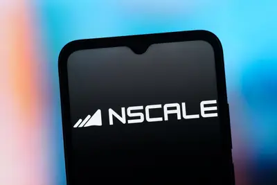
muse-specialappearslabeled
Meta's Muse appears to use an OpenAI model labeled muse-special
Article URL: https://mouse.dev/blog/muse-special/ Comments URL: https://news.ycombinator.com/item?id=49848095 Points: 103 # Comments: 44
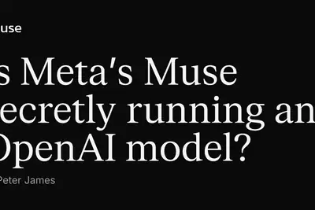
- Hacker News (100+) Meta's Muse appears to use an OpenAI model labeled muse-special
copilot+stopsinsisting
Microsoft stops insisting you need a "Copilot+ PC"
Microsoft's new Surface laptops forgo Copilot+ PC branding.
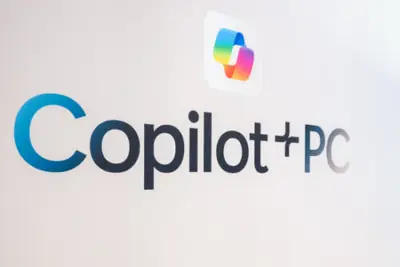
- Ars Technica AI Microsoft stops insisting you need a "Copilot+ PC"
somesupabasecustomers
Some Supabase customers are publicly exposing reams of people’s data to the web
The findings highlight how AI-generated and vibe-coded apps can spill and expose users' data when not configured or secured properly.
turingpassedtest
Astra and Opus just passed Turing’s other test
Frontier AI models are finishing Alan Turing's World War II codebreaking work.
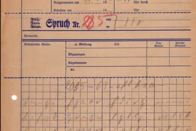
- TechCrunch AI Astra and Opus just passed Turing’s other test
watchosfeaturesolved
This one WatchOS 27 feature just solved my biggest issue with Apple Watch
Sometimes less is more, and the most helpful software update is the simplest.
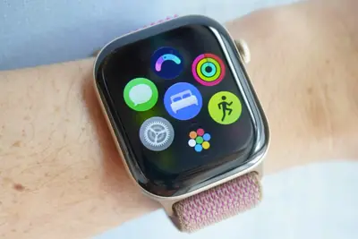
sonyumgsuing
Sony and UMG are suing Suno again
Sony and Universal Music Group filed yet another suit against Suno. The labels claim its new v6 model still infringes on their copyrights because it's trained on user outputs from previous models, which were themselves trained on unlicensed music ripped from YouTube and other sou
- The Verge AI Sony and UMG are suing Suno again
nbcregulation
比尔 · 盖茨呼吁美国立法监管 AI 开发：没有人会认为只靠行业自律就够了
IT之家 9 月 25 日消息，据美国 NBC News 北京时间今天（25 日）晚间报道，微软联合创始人、亿万富翁慈善家比尔 · 盖茨呼吁美国国会立法监管人工智能开发。 盖茨在接受 NBC 新闻《Meet the Press》节目采访时直言：“没有人认为靠行业自律就足够了。” 主持人克里斯滕 · 韦尔克问他，华盛顿是否需要通过立法介入时，盖茨回答：“ 当然需要 。执法部门和政界人士必须参与进来，讨论应该设置什么样的安全措施，又该怎样监督，而且这些要求 必须具有强制性 。这会给行业增加一些负担，但不会显著拖慢他们的工作。” 采访中，盖茨没有否认 AI 可
swarmsmonthsattacking
For months, OpenAI’s agent swarms have been attacking online databases to find obscure facts
The latest unauthorized agent swarms were discovered by researchers.
foundersseekvoting
Anthropic’s founders seek voting control ahead of IPO
Anthropic is asking its shareholders to approve a structure that would give its seven co-founders a combined 50.1% of the vote on most corporate matters.
- TechCrunch AI Anthropic’s founders seek voting control ahead of IPO
balanceton
畅销小说被指用 AI 创作，法国最有名文学奖龚古尔奖将其移出初选名单
IT之家 9 月 25 日消息，据路透社报道，当地时间 25 日，法国最负盛名的文学奖项 —— 龚古尔奖主办方宣布，将海地裔加拿大作家泰利森 · 奥雷利安的畅销小说《C'etait Ca ou Mourir（要么就这样，要么死）》移出初选名单，原因是有人指控奥雷利安使用 AI 创作该书。 奥雷利安否认使用 AI 写作。围绕他的指控随后引发了有关种族、文学价值和原创性的争论，法国文学界也因此出现一场风波。 指控最早由鲜为人知的 X 账号“Balance ton Claude”在本周提出。随笔作家塞缪尔 · 菲图西后来称该账号归自己所有，并由他与其他身份未公
u.s.upholdsdesignation
U.S. appeals court upholds designation of Anthropic as supply chain risk
Article URL: https://www.cnbc.com/2026/09/25/pentagon-anthropic-ai-risk-appeals-court.html Comments URL: https://news.ycombinator.com/item?id=49845977 Points: 360 # Comments: 663
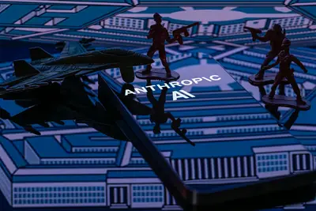
- Hacker News (100+) U.S. appeals court upholds designation of Anthropic as supply chain risk
ricursiveannagoldie
TechCrunch Disrupt 2026: Ricursive Intelligence’s Anna Goldie and Azalia Mirhoseini on when AI starts designing its own hardware
At TechCrunch Disrupt 2026, Ricursive Intelligence co-founders Anna Goldie and Azalia Mirhoseini will take the Disrupt Stage to discuss closing the loop between AI and chip development. Save up to $200 on your pass before today ends.
德国柏林警方借助人工智能监控摄像头打击犯罪，自动识别暴力和破坏行为
IT之家 9 月 25 日消息，据央视新闻报道，德国柏林警方 24 日在一处犯罪高发区域启动一项计划，将借助人工智能监控摄像头打击犯罪。 据悉，柏林警方将在这项计划启动的前四周内，在科特布斯门地区安装并调试好人工智能监控摄像头，随后正式投入使用。警方还计划将该方案推广至市内其他犯罪高发区域。 柏林警方发表声明说，该摄像头通过“空间人工智能”技术分析人员动作， 以识别潜在犯罪与暴力行为 。摄像头配套的显示屏平时处于休眠状态，当人工智能系统自动识别到暴力和破坏行为时，显示屏将亮起并显示相关信息，警员也会收到信息推送，继而判断是否采取行动。 IT之家注意到，这
layoffexpo+pass
Affected by layoffs? Don’t miss this $75 deal for your TechCrunch Disrupt 2026 Expo+ Pass
Your next opportunity could be one conversation away. Get your Expo+ Pass for just $75. Limited to the first 100 qualifying people.
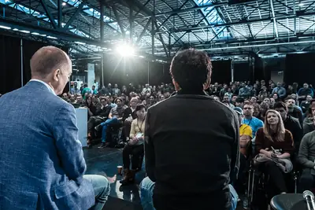
savelasthours
Last 24 hours to save up to $200 on TechCrunch Disrupt 2026. Reason 5 of 5 to attend: Momentum
Last 24 hours to save up to $200 on your TechCrunch Disrupt 2026 pass. Leave the event further in your startup's trajectory than where you started. Don't miss your chance to save and to push the needle.
foldxiaomi3.97
小米 18 Fold 中折叠首销情况曝光：9 月 7 日-13 日约 3.97 万台
IT之家 9 月 25 日消息，长期关注国内手机市场份额的数码博主 @RD观测 今日发文，爆料了小米 18 Fold 手机的首销情况，9 月 7 日-9 月 13 日约 3.97 万台。 IT之家注意到，小米 18 Fold 中折叠手机发布于 9 月 7 日，并于 9 月 10 日 10:00 正式开售， 售价 10999 元起 ，主打配色便是“西野红”。 小米 18 Fold 配备 5.38″ 外屏 + 7.58″ 内屏 ，内外屏采用约√2:1 标准纸张比例，支持 LTPO 1-120Hz 刷新率。新机首发搭载玄戒 O3 小米 AI 旗舰 SoC，CP
amazoncameraoutsmart
Can Apple Home’s AI camera features outsmart Amazon’s and Google’s? I put them to the test
A few years back, I was at a beachside Easter egg hunt, watching my kids dash through sand dunes searching for sweet treats. My phone buzzed in my pocket; I ignored it. A moment later, it buzzed again. I pulled it out, glanced down, and saw a "motion detected" notification from m
constantlycollectinghere
Your LG TV is constantly collecting your data – here’s how to stop it
Factory resetting your LG TV is the only way to remove certain data logs from its hardware.